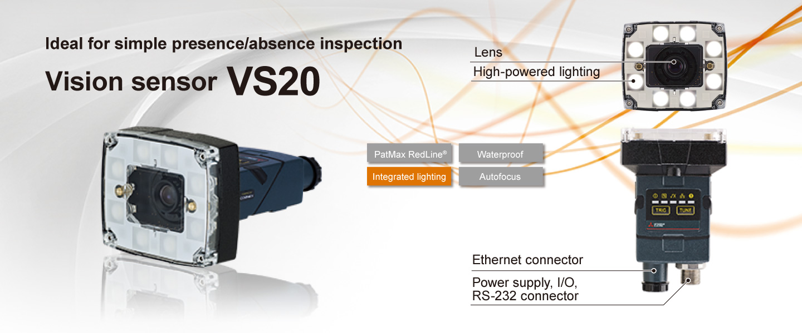
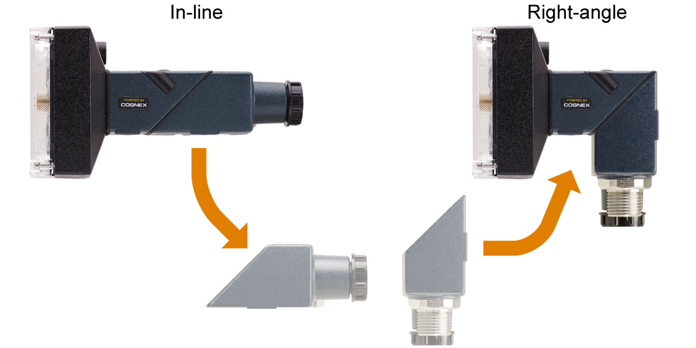
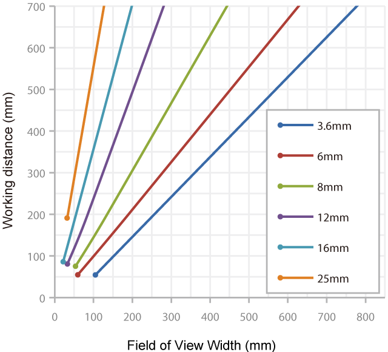
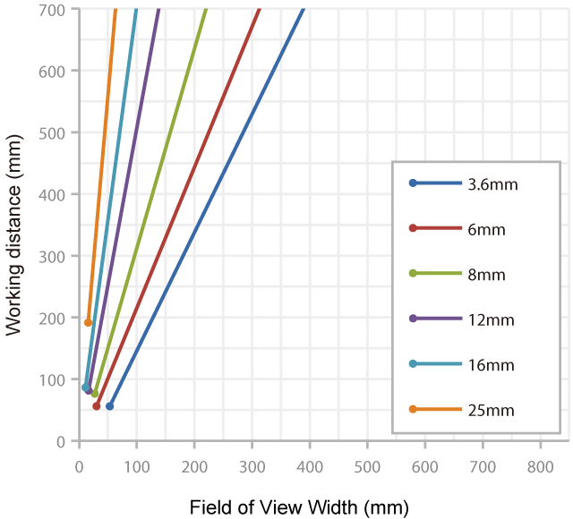
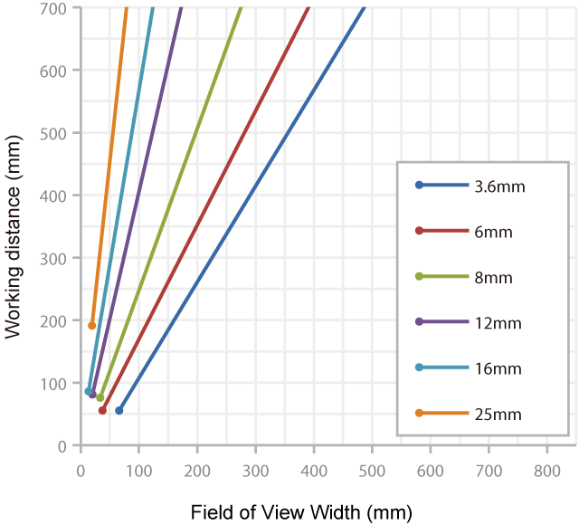

Vision Sensor Fitur Vision Sensor VS20


Bidang dapat disesuaikan dengan aplikasi Anda
Kompak seukuran telapak tangan
Ukuran kompak terpadu yang ideal untuk pemasangan di jalur produksi dengan keterbatasan ruang. Konfigurasi dapat diubah sesuai dengan ruang pemasangan.

Daftar produk
Tersedia berbagai model sesuai dengan aplikasi.
| Item | VS20M-11F310 | VS20M-12F410 | VS20C-12F410 | VS20M-13F410 | VS20C-13F410 | |
|---|---|---|---|---|---|---|
| Imagery | Monochrome | Monochrome | Color | Monochrome | Color | |
| Image resolution (pixel) |
640 × 480 (standard) | ● | ● | ● | ● | ● |
| 640 × 480 (2 × image magnification) | — | ● | ● | ● | ● | |
| 800 × 600 (2 × image magnification) | — | — | — | ● | ● | |
| Maximum image acquisition speed | (frame/s) | 40 | 75 | 55 | 75 | 55 |
| Processor performance*1 | (times) | 1 | 2 | 2 | 2 | 2 |
| PatMax RedLine® | — | — | — | — | — | |
| Spreadsheet | — | — | — | — | — | |
| EasyBuilder | ||||||
| Location tools | Pattern | ● | ● | ● | ● | ● |
| Edge, edge intersection, and circle*2 |
— | — | — | ● | ● | |
| Presence/ absence tools |
Pattern | ● | ● | ● | ● | ● |
| Color pixel count, brightness, contrast |
— | ● | ● | ● | ● | |
| Edge, circle | — | — | — | ● | ● | |
| Measurement tools | Distance, angle, and diameter of circle |
— | — | — | ● | ● |
| Counting tools | Pattern, edge | — | — | — | ● | ● |
- *1.Menganggap VS20M-11F310 sebagai 1.
- *2.Informasi lokasi yang terdeteksi dapat digunakan untuk pemeriksaan oleh alat lain.
- *3.Silakan lihat Daftar produk untuk detailnya.
Jarak kerja
Jarak dari lensa ke target inspeksi disebut sebagai "jarak kerja", dan area tempat sensor penglihatan dapat melihat pada jarak tersebut disebut sebagai "bidang pandang".
Horizontal Field of View
(640 × 480 (default))

Horizontal Field of View
(640 × 480 (2 × image magnification mode))

Horizontal Field of View
(800 × 600 (2 × image magnification mode))
